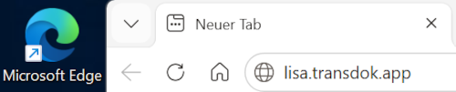
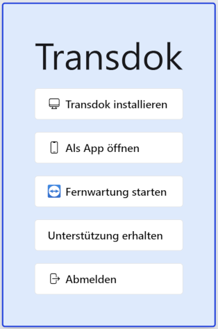
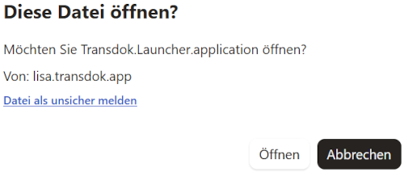
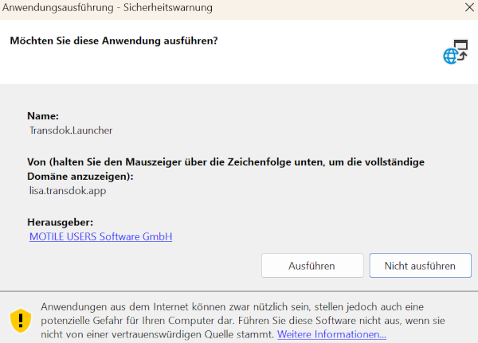
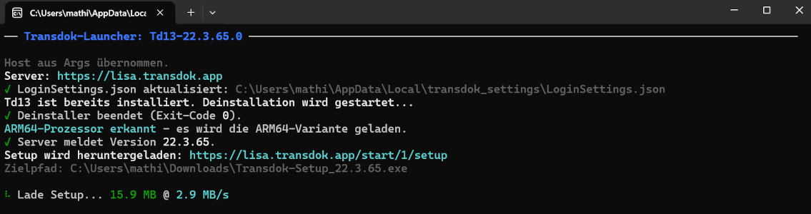
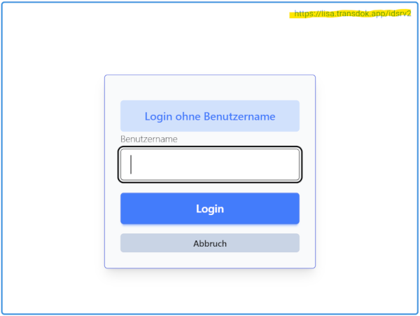
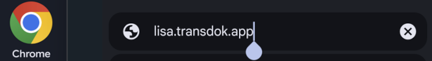
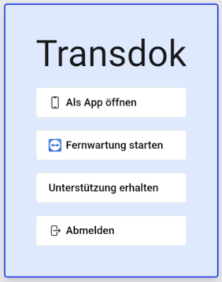
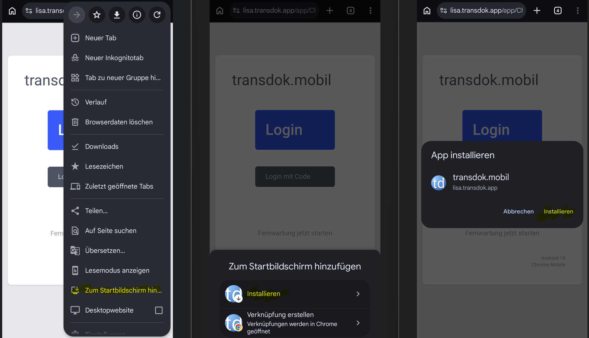

Installation
Vollversion
Die Vollversion setzt ein Windows-Betriebssystem voraus. Der Ausgangspunkt für die Installation in der mobilen Pflege in Vorarlberg ist die Internet-Seite lisa.transdok.app.
Die Seite bevorzugt mit einem Browser Microsoft Edge öffnen. Auch andere Browser können verwendet werden. Diese haben aber geringfügig andere Schritte oder Anzeigen.

Bei ‘Geben Sie den Code Ihrer Einrichtung an’ den Vorschlag Lisa gewählt lassen und Anmelden klicken. Danach mit dem Token einloggen und Transdok installieren wählen.

Öffnen klicken oder bei anderen Browsern das Download-Symbol anklicken, um die heruntergeladene Datei zu öffnen.

Bei Sicherheitswarnungen Ausführen wählen.

Wenn die Installation startet, werden in einem Fenster Informationen über die einzelnen Schritte angezeigt.

Nach erfolgreicher Installation, wird am Anmeldeschirm https://lisa.transdok.app/idsrv2 angezeigt

mobile Version
Die mobile Version kann auf Smartphones mit Android oder IPhones verwendet werden. Auch hier ist der Ausgangspunkt für die Installation die Internet-Seite lisa.transdok.app.
Die Seite bevorzugt mit dem Chrome-Browser öffnen und lisa.transdok.app in die Adresszeile tippen.

Mit Token oder Code Anmelden und Als App öffnen wählen.

Oben rechts von der Adresszeile des Browsers auf die drei Punkte tippen und folgende Schritte zum hinzufügen zum Startbildsachirm wählen. Falls Zum Startbildschirm hinufügen nicht zur Verfügung steht, zuerst einmal einloggen. Falls ein anderer Browser oder ein IPhone verwendet wird, heißt der Menüpunkt anders.
